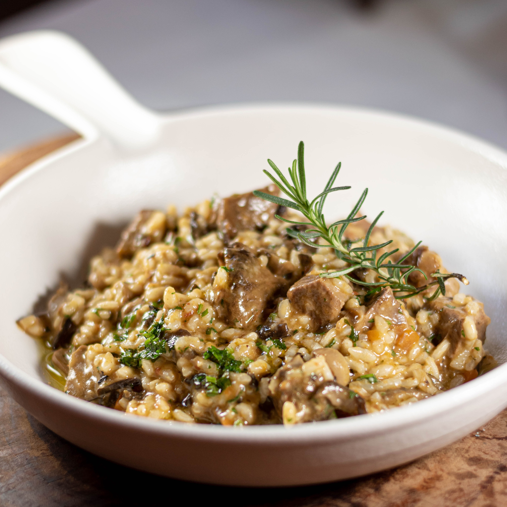

Vegetarian Risotto

Tasty vegetarian risotto
Photo by Jeremy Bishop on Unsplash
Ingredients:
- 1 cup arborio rice
- 4 cups vegetable broth
- 1 small onion, diced
- 2 cloves garlic, minced
- 1 cup sliced mushrooms
- 1 cup chopped asparagus
- 1 cup frozen peas
- 1/2 cup grated Parmesan cheese
- 2 tablespoons butter
- 2 tablespoons olive oil
- Salt and pepper to taste
Steps:
- In a large saucepan, heat the olive oil over medium heat. Add the onion and garlic and sauté for 3-4 minutes until the onion is soft and translucent.
- Add the rice to the saucepan and stir well to coat the rice in the oil and onion mixture.
- Add the vegetable broth to the saucepan, one cup at a time, stirring continuously until the broth is absorbed into the rice.
- After adding the second cup of broth, add the mushrooms, asparagus, and peas to the saucepan. Stir well to combine.
- Continue adding the broth, one cup at a time, stirring continuously until the rice is tender and the broth has been absorbed.
- Remove the saucepan from the heat and stir in the grated Parmesan cheese and butter until fully melted and combined.
- Season with salt and pepper to taste.
- Serve hot and enjoy!
Main Page